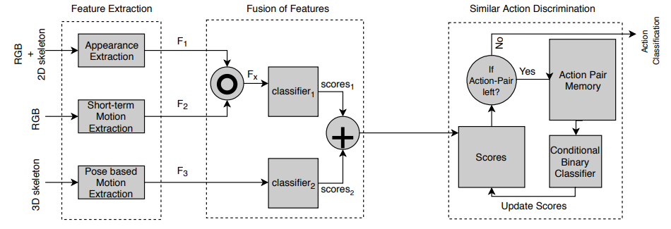

Kaustubh Sakhalkar
Computer Vision Engineer
DreamVu Inc, Hyderabad.
sakhalkark [at] gmail [dot] com



A New Hybrid Architecture for Human Activity Recognition from RGB-D videos
 Spatio-Temporal Grids for Daily Living Action Recognition
Spatio-Temporal Grids for Daily Living Action Recognition
Srijan Das, Kaustubh Sakhalkar, Michal Koperski, Francois Bremond
11th Indian Conference on Computer Vision, Graphics and Image Processing (ICVGIP 2018) December 18 - 22, Hyderabad, India
[pdf]
 Learning to Represent Spatio-Temporal Features for Fine Grained Action Recognition
Learning to Represent Spatio-Temporal Features for Fine Grained Action Recognition
Kaustubh Sakhalkar, Francois Bremond
IEEE international Image Processing Applications and Systems conference, Sophia Antipolis, France, 12-14 December,2018
[pdf]